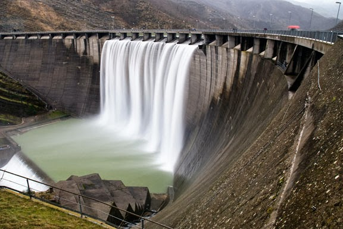
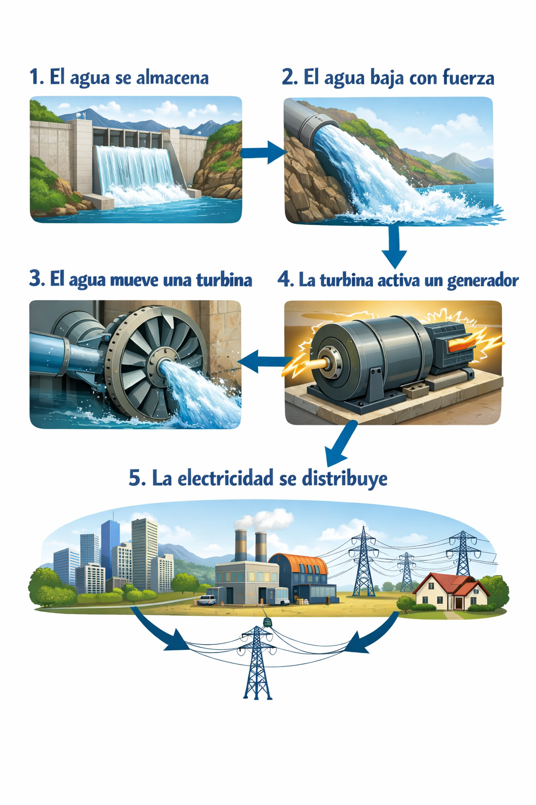
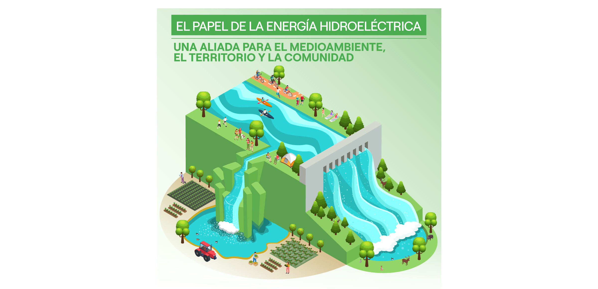
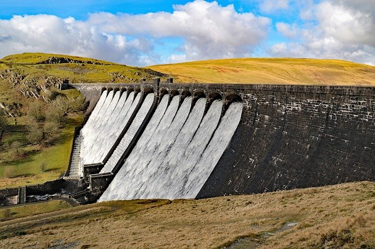

Muchas centrales hidroelectricas tiene una vida ultil extremadamente larga.
Algunas plantas construidas a principio del siglo XX siguen funcionando hoy en dia con mantenimiento adecuado

La energía hidroeléctrica es una de las fuentes de energía renovable más antiguas y grande del mundo. Aprovecha el flujo natural del agua para generar electricidad. La energía hidroeléctrica es una fuente de energía renovable, limpia y eficiente que se ha convertido en una de las principales formas de generar electricidad en el mundo. Esta forma de energía limpia aporta cada vez más usos prácticos para alimentar el desarrollo económico y favorablemente llevar a cabo impactos ambientales positivos.

La energía hidroeléctrica funciona convirtiendo la energía del agua en movimiento en electricidad...

La energía hidroeléctrica es una de las fuentes de energía más importantes a nivel mundial, y su relevancia se debe a múltiples factores ambientales, económicos y sociales. A continuación se explica su importancia:

A pesar de los beneficios de la energía hidroeléctrica, también existen algunos riesgos. Aunque es una fuente de energía limpia y renovable, su construcción puede generar cambios importantes en los ecosistemas. Entre estos impactos se encuentran la alteración de los hábitats naturales, la disminución de la fauna silvestre, los cambios en la vegetación y el desplazamiento de las comunidades que viven cerca de las represas. Además, las centrales hidroeléctricas utilizan grandes cantidades de agua. Esto puede afectar el ciclo hidrológico, el crecimiento de las plantas, la disponibilidad de los recursos hídricos y los niveles de humedad del suelo.
Muchas centrales hidroelectricas tiene una vida ultil extremadamente larga.
Algunas plantas construidas a principio del siglo XX siguen funcionando hoy en dia con mantenimiento adecuado
En paises muy frios como Canada o Noruega, algunas centrakes hidroelectricas siguen funcionando incluso cuando los rios estan parcialmente congelados. El agua sigue fluyendo por debajo del hielo, permitiendo que las turbinas generen electricidad sin interrupcion
Existen sistemas que aprovechan corrientes naturales de rios sin necesidad de grandes embalses,reduciendo el impacto ambiental y manteniendo el flujo natural del agua
Algunas plantas utilizan sistemas de bombeo: suben el agua a un nivel mas alto cuando sobra emergia y laliberan para generar elctricidad cuando se necesita. Es como una bateria gigante
La energia hidraulica representa gran parte de energia renovable global, siendo clave en paises como China, Brasil y Canada